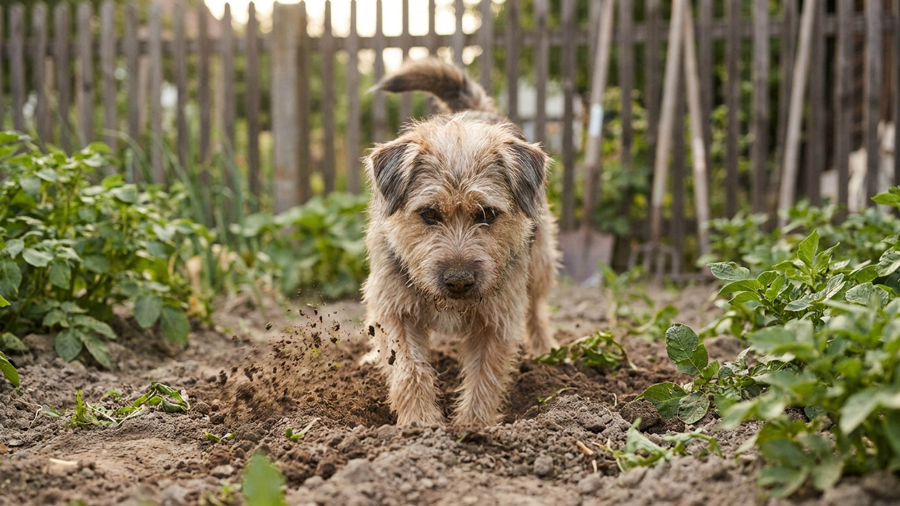

Утром — ровный газон. Вечером — лунный пейзаж. За одну неделю на даче собака переоборудует участок так, что цветники не узнать. Наказывать за это бесполезно: копание — одна из базовых потребностей многих пород. Но её можно перенаправить. Пять причин, по которым собака это делает, и один инструмент, который спасает и участок, и отношения.
🐾 Здоровье питомца под контролем
AI-ветеринар, дневник здоровья и персональные советы для вашего питомца — установите AnimaLife бесплатно.
Земля на глубине нескольких сантиметров значительно прохладнее поверхности в жару и теплее — в ветреную погоду. Собака не дурачится: она инстинктивно создаёт микроклимат.
Как выглядит эта копка: ямы появляются в тени, у стен, под кустами. Собака вырыла ямку и легла в неё — задача выполнена.
Что делать: дать собаке альтернативу. Охлаждающий коврик в тени, ванночка с водой для лап, тент или навес над лежанкой. Если собаке комфортно — нет смысла копать.
Собака предоставлена сама себе на участке несколько часов. Она обследовала всё, что можно, пробежалась по периметру и теперь ищет занятие. Земля — она везде, она интересная, она поддаётся. Копание становится хобби.
Характерно для молодых собак до 2–3 лет и для рабочих пород, которым нужна постоянная задача. Лабрадоры, хаски, джек-рассел-терьеры, бигли — в зоне риска.
Что делать: прежде чем выпустить собаку на участок — устать её. Активная прогулка, игра с хозяином, нюхательные игры. Уставшая собака ложится спать, а не копает. Также помогают игрушки-конги с лакомством внутри — занимают на долгое время.
Собака чует что-то под землёй. Мышь, крот, личинки жуков — для её носа это ясный сигнал: там что-то есть, надо достать. Терьеры буквально выведены для того, чтобы вырывать норных животных из нор — это не просто поведение, это призвание.
Как выглядит эта копка: активная, целеустремлённая, в одном конкретном месте или там, где бегают мелкие животные.
Что делать: полностью запретить такое поведение у охотничьих пород нереалистично. Но можно локализовать: «легальная копалка» (об этом ниже), обработка участка от грызунов безопасными методами, физическая нагрузка на нос — нюхательные игры, трекинг.
Некоторые породы копают — это часть их рабочей функции, закреплённой веками селекции.
Если вы взяли собаку породы с выраженным копательным инстинктом — принятие этой реальности важнее борьбы с ней. Задача — управлять, не запрещать.
Собака прячет косточку, игрушку, остаток лакомства. Это тоже эволюционный механизм — хранение запасов на потом. Копка мелкая, часто рядом с забором или у специфического ориентира.
Что делать: дать место, где прятать можно. Та же «легальная копалка» работает и здесь. Ограничьте количество «сокровищ» для прятания — если даёте жевательную кость, сначала пусть доест то, что уже спрятано.
Это самый эффективный инструмент. Смысл простой: дать собаке место, где копать можно и даже нужно — и сделать это место интереснее любого другого на участке.
Как сделать:
Как приучить: первые несколько раз показывайте место активно, копайте рядом сами, поощряйте каждый правильный контакт с копалкой. Если собака начинает копать в другом месте — спокойно и без крика перенаправьте к копалке. Не наказывайте за «неправильное» место — просто уберите туда интерес.
У большинства собак приучение занимает от нескольких дней до двух недель.
Пока копалка не заработала как постоянный якорь, временные меры помогут защитить ценные зоны:
🐾 Первая помощь — всегда под рукой
AnimaLife подскажет, что делать в тревожной ситуации с питомцем ещё до визита к врачу. Откройте в один тап.
🐾 Понравился разбор?
Подпишитесь на канал — каждый день разбираем по одному тревожному симптому у кошек и собак: что в пределах нормы, а когда пора к врачу. Подпишитесь, чтобы не пропустить разбор, который может спасти здоровье вашего питомца.
Материал носит информационный характер и не заменяет очную консультацию ветеринара.